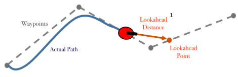
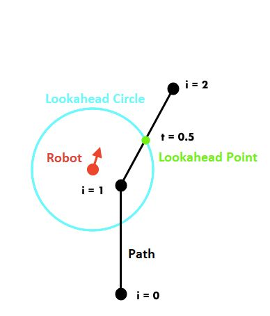

Pure Pursuit - 2019-11-25
Pure pursuit is a path following algorithm. Using odometry information and a path, pure pursuit controls how the robot should move to follow the path.
Pure pursuit has a few advantages:
- Motion profile capabilities: acceleration and velocity constraints
- Expressive arcs and curves
- Dynamic and feedback-based correction
A great paper on adaptive pure pursuit can be found here.
How it works
Pure pursuit works by finding a lookahead on the path. It does this by finding the intersection of a circle of a given radius with the path. Then, the robot seeks the lookahead by calculating curvature and velocity to reach the lookahead.


Implementing Pure Pursuit
To test pursuit, I wrote a full simulation using javascript. I was able to implement all the logic and optimization in that controlled environment. Implementing algorithms in javascript is very useful, as it provides a visual way of testing the algorithm and the code can translate to C++ quite easily. This algorithm has been in progress since June 2019.
Here are the controls:
- Ctrl + Right-click to place robot
- Click to place node
- Click and drag to move node
- Right-click node to delete
- Right-click and drag to delete selection
Here are the sliders:
- Sample resolution: how many points should be generated from the path formula
- Smoothing constant: how smooth should the connections between segments be
- Lookahead distance: how far along the path should the robot look
Code
The majority of the code currently in lib7842 is used for pure pursuit. This includes path representations, path creation and interpolation, path velocity generation (motion profile), as well as the actual path follower.
Here is an example code for pure pursuit:
auto path = SimplePath({odom->getState(), {0_ft, 0_ft}, {0_ft, 4_ft}})
.generate(1_mm)
.smoothen(.001, 1e-10 * meter);
follower.followPath(PathGenerator::generate(path, limits), false);